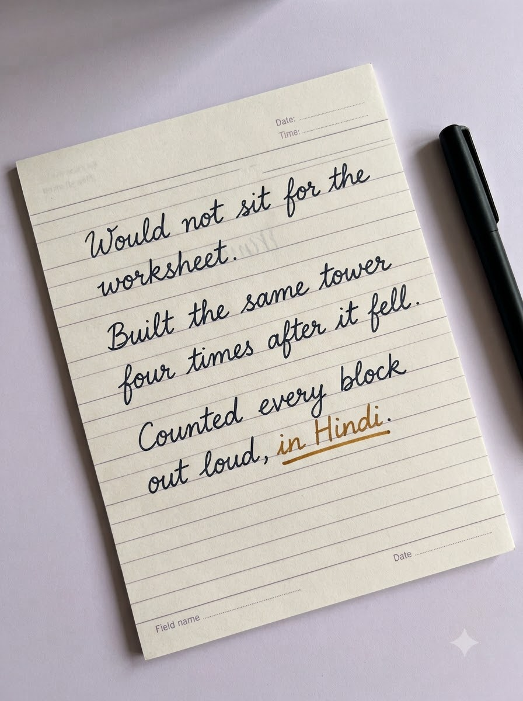
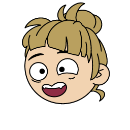
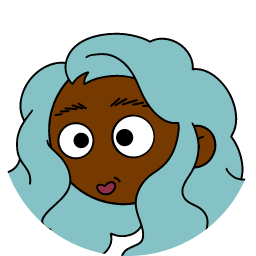
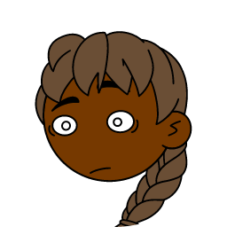
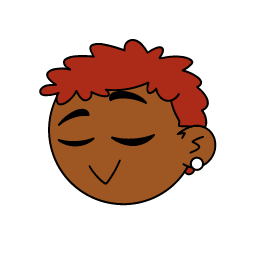
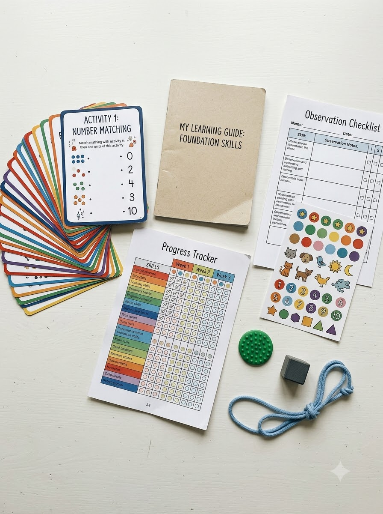
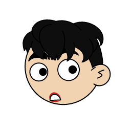
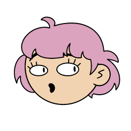

UNHEARD is a kit and an observation method that helps you see how your child actually learns. It does not diagnose anything. It gives you a way to notice more and guess less.
Observe Discover Support Grow Before labels Observe Discover Support Grow Before labels
60+parent & child surveys
45sourced activities, free
5global teaching models
₹1,200one-time, no subscription
What we heard
Nobody was writing any of it down.
We surveyed 60+ parents and children, sat with NGOs, and spoke to doctors and child development professionals. The same three things came back every time.
“Stories like Taare Zameen Par resonate because they reflect a familiar reality.”
From the founder's notes
01
A classroom built for one kind of learner
A child who thinks, moves, or processes differently gets read as distracted or slow. The label arrives long before anyone has looked closely.
02
Parents who noticed, and were waved away
Most parents already know something is different. What they do not have is language for it, or a record that anyone else will take seriously.
03
Support that starts at an assessment
The available options are clinical, expensive, or both. There is very little between doing nothing and booking an evaluation.
“Lazy”↓ What was there
A reading difference nobody had the tools to spot.
“Can't sit still”↓ What was there
A mind that thinks best while the body is moving.
“Careless”↓ What was there
A child who needs instructions shown, not just said.
“In a system that treats every child the same, we don't have bad students, only misunderstood ones.”
The UNHEARD mission
How it works
Four stages. All at home.
Twenty minutes at a time, on paper, with no conclusions asked of you until there is enough written down to see a pattern.

What an observation looks like
You write down what your child did, not what it meant.
ObservedWould not sit for the worksheet
Rebuilt itFour times after it fell
After a weekLearns by hand, counts aloud
One sheet doesn't tell you much. A week of them starts to show a pattern, and that pattern is the discovery.
01
Observe
Twenty minutes of play, one ruled sheet, and no conclusions. You write down what your child did, not what it meant.
20 min · one sheet02
Discover
Patterns show up across a week of sheets. She counts aloud. He needs to hold it first. That is the discovery.
Across a week03
Support
The activity guide points you to the activities that match what you saw, drawn from five global teaching models.
Matched activities04
Grow
The tracker holds eight weeks on one page, so change is visible and you have a record worth showing a teacher.
8 weeks · one page
Every child has a way in
Different isn't difficult.
Across a week, you see your child meet the same task with a hand, an eye, a word and a feeling. Most children lean one way. That's where you meet them.

Learns by moving
Thinks better with something in their hands or feet in motion.
Thinks in pictures
Remembers what they've seen far more than what they've heard.

Needs quiet first
Shows what they know once the room — or the noise — settles.
Talks it through
Works problems out loud, and understands by explaining.

Spots tiny details
Notices the pattern everyone else walked past.

Builds to learn
Understands an idea best after making it with their hands.
Illustrative profiles, not categories. Most children are a mix — that's the point of watching.

₹1,200One box no subscription
The kit
One box. One price.
Five things for your child to do, four for you to write on. Everything is designed to be used at the kitchen table.
The most important sentence on this website, so it gets a section of its own.
vs
An assessment
Who
A paediatrician, child psychologist or special educator
Gives you
A professional opinion and a plan
When
When what you see worries you
UNHEARD
Who
You, at home, with your own child
Gives you
A structured way to watch, and a record you can take to whoever you talk to next
When
Early, before labels are applied
UNHEARD does not tell you what your child has. It is not an assessment, not a therapy, and not a substitute for a paediatrician, a child psychologist, or a special educator. If what you observe worries you, the right next step is a professional, and we would rather say that than sell you a ₹1,200 box instead.
Our research base is 60+ surveys, NGO visits, and conversations with professionals. That is a real foundation and a small one. We would rather you knew the size of it.
Prisha Dhawan
Founder · Class 11 student


Why this exists
“I am building the tool I wish my teachers had.”
“As a student, I see some of my peers labelled ‘lazy’ by teachers who don't have the tools to see their dyslexia or ADHD.”
UNHEARD started as a question rather than a product. Prisha listened to parents, children, educators and experts who kept describing the same gap. The kit is her answer to it, and deliberately a modest one.